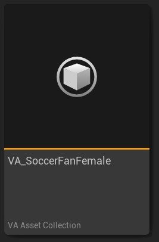
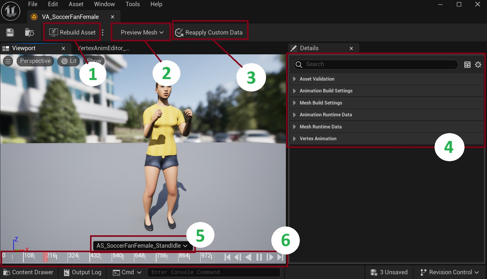

UVAAssetCollection
The VA Asset Collection is the core asset type in the Vertex Animation Studio that manages and stores all data required for vertex animations. It serves as a container that holds meshes, animations, and their associated data.

For step-by-step instructions on creating a VA Asset Collection, see our Getting Started guide.
Overview
A VA Asset Collection contains:
- Source skeletal meshes and their build settings
- Source animations that were used to make the VA Asset
- Built vertex animation meshes
- Animation data stored in textures
- Material configurations
- Per-mesh custom data
VA Asset Editor
Double-click a VA Asset Collection to open the editor window where you can configure settings and preview animations.

1. Rebuild Asset Button
This button reconstructs your mesh and materials. Use this after making any adjustments in the details panel to ensure your changes are properly applied.
2. Preview Mesh Selection
For Bone VA Asset Collections that contain multiple meshes, this dropdown menu allows you to switch between different meshes in the preview window. This is particularly useful when working with collections that include variations of the same character or object.
3. Reapply Custom Data
This button applies custom data changes to your materials. Custom data allows you to pass per-instance float values (like color variations, roughness, etc.) to materials for visual diversity between instances. See Custom Data for setup instructions.
4. Details Panel
The right-side panel contains crucial settings divided into several categories:
- Animation Settings: Configure animation build options and view runtime animation data
- Mesh Settings: Configure mesh build options and view runtime mesh data
- Custom Data: Configure per-instance custom data for material variations
These settings allow you to fine-tune various aspects of your vertex animation.
5. Animation Preview
The timeline area displays your currently selected preview animation. You can switch between different animations to visualize how your asset will appear in-game.
6. Animation Timeline
The bottom panel provides standard timeline controls for previewing your animations. Use these controls to play, pause, and scrub through your animation sequences.
Remember to click "Rebuild Asset" after making changes to apply them.
Technical Details
Storage Format
- Animations are stored as texture-based vertex data
- Positions and rotations/normals are split into separate textures
- Each mesh maintains its own vertex layout and UV configuration
- Build hashes track asset changes and dependencies
See Also
- Getting Started - How to create and configure VA Asset Collections
- Animation Settings - Configure animation build settings
- Mesh Settings - Configure mesh build settings
- Custom Data - Set up per-instance variations
- Animation Control - Control animations in your VA Asset Collection
- VA Mesh Component - Use VA Asset Collections with single characters
- VA Instanced Mesh Component - Use VA Asset Collections with multiple characters